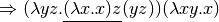

5. Standard ML¶
1 2 3 4 5 6 7 8 9 10 11 12 13 | program P;
var b : integer;
function a() : integer;
begin
b:=b+2;
return 5
end;
begin
b:=10;
write(a()+b)
(* or write(b+a()) *)
end.
|
Fig. 5.1: Commutativity
Practice 5.1
Is addition commutative in C++, Pascal, Java, or Python? Will write(a+b) always produce the same value as write(b+a)? Consider the Pascal program in figure 5.1. What does this program produce? What would it produce if the statement were write(b+a())?
5.1. Imperative vs Functional Programming¶
5.2. The Lambda Calculus¶
5.2.1. Normal Form¶


Fig 5.2 Normal Order Reduction
Practice 5.2
Another reduction strategy is called applicative order reduction. Using this strategy, the left-most inner-most redex is always reduced first. Use this strategy to reduce the expression in example 5.3. Be sure to parenthesize your expression first so you are sure that you left-associate redexes.
5.2.2. Problems with Applicative Order Reduction¶
Practice 5.3
Reduce the expression with both normal order and applicative order reduction. Don’t spend too much time on this!
5.3. Getting Started with Standard ML¶
5.4. Expressions, Types, Structures, and Functions¶
- 6; val it = 6 : int - 5*3; val it = 15 : int - ~1; val it = ~1 : int - 5.0 * 3.0; val it = 15.0 : real - true; val it = true : bool - 5 * 3.0; Error: operator and operand don't agree operator domain: int * int operand: int * real in expression: 5 * 3.0 -
Fig 5.3 Interpreter Interaction
- Real.fromInt(5) * 3.0;
val it = 15.0 : real
-
val fromInt : int -> real
Practice 5.4
Write expressions that compute the values described below. Consult the basis library in Appendix B of the textbook as needed.
- Divide the integer bound to x by 6.
- Multiply the integer x and the real number y giving the closest integer as the result.
- Divide the real number 6.3 into the real number bound to x.
- Compute the remainder of dividing integer x by integer y.
5.5. Recursive Functions¶
fun babsqrt(x,guess) =
if Real.abs(x-guess*guess) < x/1000000.0 then
guess
else
babsqrt(x,(guess + x/guess)/2.0);
Fig. 5.4 Square Root
Practice 5.5
is called the factorial of  . It is defined recursively as and . Write this as a recursive function in SML.
. It is defined recursively as and . Write this as a recursive function in SML.
Practice 5.6
The Fibonacci sequence is a sequence of numbers 0, 1, 1, 2, 3, 5, 8, 13, … Subsequent numbers in the sequence are derived by adding the previous two numbers in the sequence together. This leads to a recursive definition of the Fibonacci sequence. What is the recursive definition of Fibonacci’s sequence? HINT: The first number in the sequence can be thought of as the zeroeth element, then the first element is next and so on. So, fib(0) = 0. After arriving at the definition, write a recursive SML function to find the element of the sequence.
5.6. Characters, Strings, and Lists¶
- [1,4,9,16]
- 1::[4,9,16,25]
- #”a”::#”b”::[#”c”]
- 1::2::3::nil
- [“hello”,”how”]@[“are”,”you”]
:: : 'a * 'a list -> 'a list
@ : 'a list * 'a list -> 'a list
hd : 'a list -> 'a
tl : 'a list -> 'a list
Fig. 5.5 Function Signatures
Practice 5.7
The following are NOT valid list constructions in SML. Why not? Can you fix them?
- #”a”::[“beautiful day”]
- “hi”::”there”
- [“how”,”are”]::”you”
- [1,2.0,3.5,4.2]
- 2@[3,4]
- []::3
fun implode(lst) =
if lst = [] then ""
else str(hd(lst))^implode(tl(lst))
Fig. 5.6 The Implode Function
Practice 5.8
Write a function called explode that will take a string as an argument and return a list of characters in the string. So, explode(“hi”) would yield [#”h”,#”i”]. HINT: How do you get the first character of a string?
fun length(x) =
if null x then 0
else 1+length(tl(x))
fun append(L1, L2) =
if null L1 then L2
else hd(L1)::append(tl(L1),L2)
Fig. 5.7 Two List Functions
Practice 5.9
Use the append function to write reverse. The reverse function reverses the elements of a list. Its signature is
reverse = fn: 'a list -> 'a list
5.7. Pattern Matching¶
fun append(nil,L2) = L2
| append(h::t,L2) = h::(append(t,L2))
Fig. 5.8 Pattern Matching
5.8. Tuples¶
val append : 'a list * 'a list -> 'a list
5.9. Let Expressions and Scope¶
fun sumupto(0) = 0
| sumupto(n) =
let val sum = sumupto(n-1)
in
n + sum
end
Fig. 5.9 Let Expression
Practice 5.11
What is the value of x at the various numbered points within the following expression? Be careful, it’s not what you think it might be if you are relying on your imperative understanding of code.
let val x = 10
in
(* 1. Value of x here? *)
let val x = x+1
in
(* 2. Value of x here? *)
x
end;
(* 3. Value of x here? *)
x
end
let fun a() =
let val x = 1
fun b() = x
in
b
end
val x = 2
val c = a()
in
c()
end
Fig. 5.10 Scope
5.10. Datatypes¶
enum TokenType {
identifier,keyword,
number,add,sub,times,
divide,lparen,
rparen,eof,unrecognized
};
Fig. 5.11 C++ Enum Type
TokenType t = keyword;
t = 1; //this is the keyword value.
- datatype TokenType = Identifier | Keyword | Number |
Add | Sub | Times | Divide | LParen | RParen | EOF |
Unrecognized;
datatype TokenType = Identifier | Keyword | Number | ...
- val x = Keyword;
x = Keyword : TokenType
datatype
AST = add' of AST * AST
| sub' of AST * AST
| prod' of AST * AST
| div' of AST * AST
| negate' of AST
| integer' of int
| store' of AST
| recall';
Fig. 5.12 An AST Datatype
Fig. 5.13 An AST in SML
fun evaluate(add'(e1,e2),min) =
let val (r1,mout1)= evaluate(e1,min)
val (r2,mout) = evaluate(e2,mout1)
in
(r1+r2,mout)
end
| evaluate(sub'(e1,e2),min) =
let val (r1,mout1)= evaluate(e1,min)
val (r2,mout) = evaluate(e2,mout1)
in
(r1-r2,mout)
end
Fig. 5.14 Pattern Matching Function Results
Practice 5.12
Define a datatype for integer lists. A list is constructed of a head and a tail. Sometimes this constructor is called cons. The empty list is also a list and is usually called nil. However, in this practice problem, to distinguish from the built-in nil you could call it nil’.
Practice 5.13
Write a function called maxIntList that returns the maximum integer found in one of the lists you just defined in practice problem 5.12. You can consult Appendix B of the textbook for help with finding the max of two integers.
5.11. Parameter Passing in Standard ML¶
5.12. Efficiency of Recursion¶
fun fib(0) = 0
| fib(1) = 1
| fib(n) = fib(n-1) + fib(n-2)
Fig. 5.15 The Fib Function
Fig. 5.16 Calls to calculate fib(5)
Practice 5.14
One way of proving that the fib function given above is exponential is to show that the number of calls for fib(n) is bounded by two exponential functions. In other words, there is an exponential function of n that will always return less than the number of calls required to compute fib(n) and there is another exponential function that always returns greater than the number of required calls to compute fib(n) for some choice of starting n and all values greater than it. If the number of calls to compute fib(n) lies in between then the fib function must have exponential complexity. Find two exponential functions of the form  that bound the number of calls required to compute fib(n).
that bound the number of calls required to compute fib(n).
fun fib(n) =
let fun fibhelper(count,current,previous) =
if count = n then previous
else fibhelper(count+1,previous+current,current)
in
fibhelper(0,1,0)
end
Fig. 5.17 An Efficient Fib Function
Practice 5.15
Consider the reverse function from practice problem 5.10. The append function is called n times, where n is the length of the list. How many cons operations happen each time append is called? What is the overall complexity of the reverse function?
5.13. Tail Recursion¶
fun factorial 0 = 1
| factorial n = n * factorial (n-1);
Fig. 5.18 Factorial

Practice 5.16
Show the run-time execution stack at the point that factorial 0 is executing when the original call was factorial 6.
fun factorial n =
let fun tailfac(0,prod) = prod
| tailfac(n,prod) = tailfac(n-1,prod*n)
in
tailfac(n,1)
end
Fig. 5.19 Tail Recursive Factorial
Practice 5.17
Use the accumulator pattern to devise a more efficient reverse function. The append function is not used in the efficient reverse function. HINT: What are we trying to accumulate? What is the identity of that operation?
5.14. Currying¶
- fun plus(a:int,b) = a+b;
val plus = fn : int * int -> int
- plus (5,8);
val it = 13 : int
- fun cplus (a:int) b = a+b;
val cplus = fn : int -> (int -> int )
- cplus 5 8;
val it = 13 : int
- (cplus 5) 8;
val it = 13 : int
- cplus 5;
val it = fn : int -> int
- val add5 = cplus 5;
val add5 = fn : int -> int
- add5 8;
val it = 13 : int
Practice 5.18
Write a function that given an uncurried function of two arguments will return a curried form of the function so that it takes its arguments one at a time.
Write a function that given a curried function that takes two arguments one at a time will return an uncurried version of the given function.
5.15. Anonymous Functions¶
fn x => fn y => y*y + x;
- (fn x => fn y => y*y + x) 3 4;
val it = 19 : int
- val f = fn x => fn y => y*y + x;
val f = fn: int -> int -> int
- f 3 4;
val it = 19 : int
- val rec fac = fn n => if n=0 then 1 else n*fac(n-1);
val fac = fn: int -> int
- fac 7;
val it = 5040:int
5.16. Higher-Order Functions¶
- val fnlist = [fn (n) => 2*n, abs, ~, fn (n) => n*n];
val fnlist = [fn,fn,fn,fn] : (int -> int) list
- fun construction nil n = nil
| construction (h::t) n = (h n)::(construction t n);
val construction = fn : ('a -> 'b) list -> 'a -> 'b list
- construction [op +, op *, fn (x,y) => x - y] (4,5);
val it = [9,20,~1] : int list
5.16.1. Composition¶
- fun compose f g x = f (g x);
val compose = fn : ('a -> 'b) -> ('c -> 'a) -> 'c -> 'b
- fun add1 n = n+1;
val add1 = fn : int -> int
- fun sqr n:int = n*n;
val sqr = fn : int -> int
- val incsqr = compose add1 sqr;
val incsqr = fn : int -> int
- val sqrinc = compose sqr add1;
val sqrinc = fn : int -> int
- incsqr 5;
val it = 26 : int
- sqrinc 5;
val it = 36 : int
- op o;
val it = fn : ('a -> 'b) * ('c -> 'a) -> 'c -> 'b
- val incsqr = add1 o sqr;
val incsqr = fn : int -> int
- incsqr 5;
val it = 26 : int
- val sqrinc = op o(sqr,add1);
val sqrinc = fn : int -> int
- sqrinc 5;
val it = 36 : int
fun map f nil = nil
| map f (h::t) = (f h)::(map f t);
Fig. 5.20 The Map Function
5.16.2. Map¶
- map;
val it = fn : ('a -> 'b) -> 'a list -> 'b list
- map add1 [1,2,3];
val it = [2,3,4] : int list
- map (fn n => n*n - 1) [1,2,3,4,5];
val it = [0,3,8,15,24] : int list
- map (fn ls => "a"::ls) [["a","b"],["c"],["d","e","f"]];
val it = [["a","a","b"],["a","c"],["a","d","e","f"]] :
string list list
- map real [1,2,3,4,5];
val it = [1.0,2.0,3.0,4.0,5.0] : real list
Practice 5.19
Describe the behavior (signatures and output) of these functions:
- map (map add1)
- (map map)
Invoking (map map) causes the type inference system of SML to report
stdIn:12.27-13.7 Warning: type vars not generalized
because of value restriction are instantiated to
dummy types (X1,X2,...)
This warning message is OK. It is telling you that to complete the type inference for this expression, SML had to instantiate a type variable to a dummy variable. When more type information is available, SML would not need to do this. The warning message only applies to the specific case where you created a function by invoking (map map). In the presence of more information the type inference system will interpret the type correctly without any dummy variables.
5.16.3. Reduce or Foldright¶
- fun sum nil = 0
| sum ((h:int)::t) = h + sum t;
val sum = fn : int list -> int
- sum [1,2,3,4,5];
val it = 15 : int
- fun product nil = 1
| product ((h:int)::t) = h * product t;
val product = fn : int list -> int
- product [1,2,3,4,5];
val it = 120 : int
- fun foldr f init nil = init
| foldr f init (h::t) = f(h, foldr f init t);
val foldr = fn : ('a * 'b -> 'b) -> 'b -> 'a list -> 'b
- foldr op + 0 [1,2,3,4,5];
val it = 15 : int
- foldr op * 1 [1,2,3,4,5];
val it = 120 : int
- val sumlist = List.foldr (op +) 0;
val sumlist = fn : int list -> int
- val mullist = List.foldr op * 1;
val mullist = fn : int list -> int
- sumlist [1,2,3,4,5];
val it = 15 : int
- mullist [1,2,3,4,5];
val it = 120 : int
- List.foldr;
val it = fn : ('a * 'b -> 'b) -> 'b -> 'a list -> 'b
- List.foldl;
val it = fn : ('a * 'b -> 'b) -> 'b -> 'a list -> 'b
- fun abdiff (m,n:int) = abs(m-n);
val abdiff = fn : int * int -> int
- foldr abdiff 0 [1,2,3,4,5];
val it = 1 : int
- foldl abdiff 0 [1,2,3,4,5];
val it = 3 : int
Practice 5.20
How does foldl differ from foldr? Determine the difference by looking at the example above. Then, describe the result of these functions invocations.
- foldr op :: nil ls
- foldr op @ nil ls
5.16.4. Filter¶
- fun filter bfun nil = nil
| filter bfun (h::t) = if bfun h then h::filter bfun t
else filter bfun t;
val it = fn : ('a -> bool) -> 'a list -> 'a list
- even;
val it = fn : int -> bool
- filter even [1,2,3,4,5,6];
val it = [2,4,6] : int list
- filter (fn n => n > 3) [1,2,3,4,5,6];
val it = [4,5,6] : int list
Practice 5.21
Use filter to select numbers from a list that are
- divisible by 7
- greater than 10 or equal to zero
5.17. Continuation Passing Style¶
- fun len nil = 0
| len (h::t) = 1+(len t);
val len = fn : 'a list -> int
- fun cpslen nil k = k 0
| cpslen (h::t) k = cpslen t (fn v => (k (1 + v)));
val cpslen = fn : 'a list -> (int -> 'b) -> 'b
- cpslen [1,2,3] (fn v => v);
val it = 3 : int
Practice 5.22
Trace the execution of cpslen to see how it works and how the continuation is used.
Practice 5.23
Write a function called depth that prints the longest path in a binary tree. First create the datatype for a binary tree. You can use the Int.max function in your solution, which returns the maximum of two integers.
First write a non-cps depth function, then write a cps cpsdepth function.
5.18. Input and Output¶
- val s = TextIO.input(TextIO.stdIn);
hi there
val s = "hi there\n" : vector
- explode(s);
val it = [#"h",#"i",#" ",#"t",#"h",#"e",
#"r",#"e",#"\n"] : char list
- TextIO.output(TextIO.stdOut,s^"How are you!\n");
hi there
How are you!
- val it = () : unit
- val u = TextIO.input1(TextIO.stdIn);
hi there
val u = SOME #"h" : elem option
=
= ^C
Interrupt
- u;
val it = SOME #"h" : elem option
- val v = valOf(u);
val v = #"h" : elem
5.19. Programming with Side-effects¶
5.19.1. Variable Declarations¶
- val x = ref 0;
val x = ref 0 : int ref
- !x;
val it = 0 : int
- x := !x + 1;
val it = () : unit
- !x;
val it = 1 : int
5.19.2. Sequential Execution¶
1 2 3 4 5 6 7 | let val x = ref 0
in
x:= !x + 1;
TextIO.output(TextIO.stdOut,"The new value of x is "^
Int.toString(!x)^"\n");
!x
end
|
Fig 5.21 Sequential Execution
The new value of x is 1
val it = 1 : int
(TextIO.output(TextIO.stdOut,"The value of x is " ^
Int.toString(x);
x+1)
5.19.3. Iteration¶
5.20. Exception Handling¶
exception emptyList;
fun maxIntList [] = raise emptyList
| maxIntList (h::t) = Int.max(h,maxIntList t) handle
emptyList => h
5.21. Encapsulation in ML¶
5.21.1. Signatures¶
signature SetSig =
sig
exception Choiceset
exception Restset
datatype 'a set = Set of 'a list
val emptyset : 'a set
val singleton : 'a -> 'a set
val member : ''a -> ''a set -> bool
val union : ''a set -> ''a set -> ''a set
val intersect : ''a set -> ''a set -> ''a set
val setdif : ''a set -> ''a set -> ''a set
val card : 'a set -> int
val subset : ''a set -> ''a set -> bool
val simetdif : ''a set -> ''a set -> ''a set
val forall : ''a set -> (''a -> bool) -> bool
val forsome : ''a set -> (''a -> bool) -> bool
val forsomeone : 'a set -> ('a -> bool) -> bool
end
Fig. 5.22 The Set Signature
5.21.2. Implementing a Signature¶
(***** An Implementation of Sets as a SML datatype *****)
structure Set : SetSig =
struct
exception Choiceset
exception Restset
datatype 'a set = Set of 'a list
val emptyset = Set []
fun singleton e = Set [e]
fun member e (Set []) = false
| member e (Set (h::t)) = (e = h) orelse member e (Set t)
fun notmember element st = not (member element st)
fun union (s1 as Set L1) (s2 as Set L2) =
let fun noDup e = notmember e s2
in
Set ((List.filter noDup L1)@(L2))
end
...
end
Fig. 5.23 A Set Structure
Practice 5.24
- Write the card function. Cardinality of a set is the size of the set.
- Write the intersect function. Intersection of two sets are just those elements that the two sets have in common. Sets do not contain duplicate elements.
5.22. Type Inference¶
IfThen
fun f(nil,nil) = nil
| f(x::xs,y::ys) = (x,y)::f(xs,ys);
f: 'a * 'b -> 'c
f: ('p list) * ('s list) -> 't list
f: 'p list * 's list -> ('p * 's) list
fun g h x = if null x then nil
else
if h (hd x) then g h (tl x)
else (hd x)::g h (tl x);
g: 'a -> 'b -> 'c
g: 'a -> ('s list) -> 'c
g: ('s -> bool) -> ('s list) -> 'c
g: ('s -> bool) -> 's list -> s list
5.23. Building a Prefix Caclculator Interpreter¶
 where
where
1 2 3 4 5 6 7 8 9 10 11 12 13 14 15 16 17 18 19 20 21 22 23 24 | fun delimiter #" " = true
| delimiter #"\t" = true
| delimiter #"\n" = true
| delimiter _ = false
fun run() =
(TextIO.output(TextIO.stdOut,"Please enter a prefix calculator expression: ");
TextIO.flushOut(TextIO.stdOut);
let val line = TextIO.inputLine(TextIO.stdIn)
val tokens = String.tokens delimiter (valOf line)
val (ast,remainingTokens) = E(tokens)
val result = eval(ast)
in
if length(remainingTokens) <> 0 then
raise(eofException)
else ();
TextIO.output(TextIO.stdOut,"The answer is: " ^ Int.toString(result) ^ "\n")
end
handle eofException =>
TextIO.output(TextIO.stdOut,
"You entered an invalid prefix expression.\n")
| Option =>
TextIO.output(TextIO.stdOut,
"You entered invalid characters in the prefix expression.\n"))
|
Fig. 5.24 The Prefix Calc Interpreter Run Function
- run();
Please enter a prefix calculator expression: + * S ~ 6 R 5
The answer is: 41
val it = () : unit
1 2 3 4 5 6 7 8 9 10 11 12 13 14 15 16 17 18 19 20 21 22 23 24 25 26 27 28 29 30 31 32 33 34 35 36 37 38 39 40 41 42 43 | exception eofException;
fun E ("+"::rest) =
let val (ast1,rest1) = E(rest)
val (ast2,rest2) = E(rest1)
in
(add'(ast1,ast2),rest2)
end
| E ("-"::rest) =
let val (ast1,rest1) = E(rest)
val (ast2,rest2) = E(rest1)
in
(sub'(ast1,ast2),rest2)
end
| E ("*"::rest) =
let val (ast1,rest1) = E(rest)
val (ast2,rest2) = E(rest1)
in
(prod'(ast1,ast2),rest2)
end
| E ("/"::rest) =
let val (ast1,rest1) = E(rest)
val (ast2,rest2) = E(rest1)
in
(div'(ast1,ast2),rest2)
end
| E ("~"::rest) =
let val (ast,rest1) = E(rest)
in
(negate'(ast),rest1)
end
| E ("S"::rest) =
let val (ast,rest1) = E(rest)
in
(store'(ast),rest1)
end
| E ("R"::rest) = (recall',rest)
| E (x::rest) =
let val i = valOf(Int.fromString(x))
in
(integer'(i),rest)
end
| E nil = raise eofException;
|
Fig. 5.25 The Parser
5.23.1. The Prefix Calc Parser¶
1 2 3 4 5 6 7 8 9 10 11 12 13 14 15 16 17 18 19 | val memory = ref 0;
fun eval(add'(t1,t2)) =
eval(t1) + eval(t2)
| eval(sub'(t1,t2)) =
eval(t1) - eval(t2)
| eval(prod'(t1,t2)) =
eval(t1) * eval(t2)
| eval(div'(t1,t2)) =
eval(t1) div eval(t2)
| eval(negate'(t)) =
~1 * eval(t)
| eval(store'(t)) =
let val x = eval(t)
in
memory := x;
x
end
| eval(recall') = !memory
| eval(integer'(x)) = x
|
Fig. 5.26 The Evaluator
5.23.2. The AST Evaluator¶
5.23.3. Imperative Programming Observations¶
5.24. Chapter Summary¶
5.25. Exercises¶
In the exercises below you are encouraged to write other functions that may help you in your solutions. You might have better luck with some of the harder ones if you solve a simpler problem first that can be used in the solution to the harder problem.
You may wish to put your solutions to these problems in a file and then
- use "thefile";
in SML. This will make writing the solutions easier. You can try the solutions out by placing tests right within the same file. You should always comment any code you write. Comments in SML are preceded with a (* and terminated with a *).
Reduce
by normal order and applicative order reduction strategies. Show the steps.
How does the SML interpreter respond to evaluating each of the following expressions? Evaluate each of these expression in ML and record what the response of the ML interpreter is.
- 8 div 3;
- 8 mod 3;
- “hi”^”there”;
- 8 mod 3 = 8 div 3 orelse 4 div 0 = 4;
- 8 mod 3 = 8 div 3 andalso 4 div 0 = 4;
Describe the behavior of the orelse operator in exercise 2 by writing an equivalent if then expression. You may use nested if expressions. Be sure to try your solution to see you get the same result.
Describe the behavior of the andalso operator in exercise 2 by writing an equivalent if then expression. Again you can use nested if expressions.
Write an expression that converts a character to a string.
Write an expression that converts a real number to the next lower integer.
Write an expression that converts a character to an integer.
Write an expression that converts an integer to a character.
What is the signature of the following functions? Give the signature and an example of using each function.
- hd
- tl
- explode
- concat
- :: - This is an infix operator. Use the prefix form of op :: to get the signature.
The greatest common divisor of two numbers,
and , can be defined recursively. If is zero then
Write a recursive function called allCaps that given a string returns a capitalized version of the string.
Write a recursive function called firstCaps that given a list of strings, returns a list where the first letter of each of the original strings is capitalized.
Using pattern matching, write a recursive function called swap that swaps every pair of elements in a list. So, if [1,2,3,4,5] is given to the function it returns [2,1,4,3,5].
Using pattern matching, write a function called rotate that rotates a list by
Use pattern matching to write a recursive function called delete that deletes the letter from a string. So, delete(3,”Hi there”) returns “Hi here”. HINT: This might be easier to do if it were a list.
Again, using pattern matching write a recursive function called intpow that computes . It should do so with
complexity.
Rewrite the rotate function of exercise 14 calling it rotate2 to use a helper function so as to guarantee complexity where
Rewrite exercise 14’s rotate(n,lst) function calling it rotate3 to guarantee that less than rotations are done where is the length of the list. However, the outcome of rotate should be the same as if you rotated n times. For instance, calling the function as rotate3(6,[1,2,3,4,5]) should return [2,3,4,5,1] with less than 5 recursive calls to rotate3.
Rewrite the delete function from exercise 15 calling it delete2 so that it is curried.
Write a function called delete5 that always deletes the fifth character of a string.
Use a higher-order function to find all those elements of a list of integers that are even.
Use a higher-order function to find all those strings that begin with a lower case letter.
Use a higher-order function to write the function allCaps from exercise 11.
Write a function called find(s,file) that prints the lines from the file named file that contain the string s. You can print the lines to TextIO.stdOut. The file should exist and should be in the current directory.
Write a higher-order function called transform that applies the same function to all elements of a list transforming it to the new values. However, if an exception occurs when transforming an element of the list, the original value in the given list should be used. For instance,
- transform (fn x => 15 div x) [1,3,0,5] val it = [15,5,0,3] : int listThe natural numbers can be defined as the set of terms constructed from
and the where
Write a convert(x) function that given a natural number like that defined in exercise 26 returns the integer equivalent of that value.
Define a function called add(x,y) that given x and y, two natural numbers as described in exercise 26, returns a natural number that represents the sum of x and y. For example,
- add(succ(succ(O)),succ(O)) val it = succ(succ(succ(O))) : NaturalYou may NOT use convert or any form of it in your solution.
Define a function called mul(x,y) that given x and y, two natural numbers as described in exercise 26, returns a natural that represents the product of x and y. You may NOT use convert or any form of it in your solution.
Using the add function in exercise 28, write a new function hadd that uses the higher order function called foldr to add together a list of natural numbers.
The prefix calculator intpreter presented at the end of this chapter can be implemented a little more concisely by having the parser not only parse the prefix expression, but also evaluate the expression at the same time. If this is to be done, the parser ends up returning a unit because the parser does not need to return an AST since the expression has already been evaluated. This means the definition of the AST is no longer needed. Rewrite the prefix calculator code presented at the end of this chapter to combine the parse and eval functions. Remove any unneeded code from your implementation but be sure to cover all the error conditions as the version presented in this chapter.
Alter the prefix expression calculator to accept either integers or floating point numbers as input. The result should always be a float in this implementation.
Add an input operator to the prefix calculator. In this version, expressions like + S I 5 when evaluated would prompt the user to enter a value when the I was encountered. This expression, when evaluated, would cause the program to respond as follows.
Please enter a prefix calculator expression: + S I 5 ? 4 The answer is: 9The prefix calculator intrepeter presented in this chapter can be transformed into a prefix calculator compiler by having the program write a file called a.casm with a CoCo program that when run evaluates the compiled prefix calculator expression. Alter the code at the end of this chapter to create a prefix caclulator compiler. Running the compiler should work like this.
% sml - use "prefixcalc.sml"; - run(); Please enter a prefix calculator expression: + S 6 5 - <ctrl-d> % coco a.casm The answer is: 11For an extra hard project, combine the previous two exercises into one prefix calc compiler whose programs when run can gather input from the user to be used in the calculation.
Rewrite the prefix calculator project to single thread the memory location through the eval function as shown in figure 5.12. Completing this project removes the imperatively updated memory location from the code and replaces it with a single-threaded argument to the eval function.
5.26. Solutions to Practice Problems¶
These are solutions to the practice problems. You should only consult these answers after you have tried each of them for yourself first. Practice problems are meant to help reinforce the material you have just read so make use of them.
5.26.1. Solution to Practice Problem 5.1¶
Addition is not commutative in Pascal or Java. The problem is that a function call, which may be one or both of the operands to the addition operator, could have a side-effect. In that case, the functions must be called in order. If no order is specified within expression evaluation then you can’t even reliably write code with side-effects within an expression.
Here’s another example of the problem with side-effects within code. In the code below, it was observed that when the code was compiled with one C++ compiler it printed 1,2 while with another compiler it printed 1,1. In this case, the language definition is the problem. The C++ language definition doesn’t say what should happen in this case. The decision is left to the compiler writer.
int x = 1;
cout << x++ << x << endl;
The practice problem writes 17 as written. If the expression were b+a() then 15 would be written.
5.26.2. Solution to Practice Problem 5.2¶
With either normal order or applicative order function application is still left-associative. There is no choice for the initial redex.


5.26.3. Solution to Practice Problem 5.3¶
Normal Order Reduction
Applicative Order Reduction
…
You get the idea.
5.26.4. Solution to Practice Problem 5.4¶
x div 6
Real.round(Real.fromInt(x) * y)
x / 6.3
x mod y
5.26.5. Solution to Practice Problem 5.5¶
fun factorial(n) = if n=0 then 1 else n*factorial(n-1)
5.26.6. Solution to Practice Problem 5.6¶
The recursive definition is fib(0) = 0, fib(1) = 1, fib(n)=fib(n-1)+fib(n-2). The recursive function is:
fun fib(n) = if n = 0 then 1 else
if n = 1 then 1 else
fib(n-1) + fib(n-2)
5.26.7. Solution to Practice Problem 5.7¶
The solutions below are example solutions only. Others exist. However, the problem with each invalid list is not debatable.
- You cannot cons a character onto a string list. “a”::[“beautiful day”]
- You cannot cons two strings. The second operand must be a list. “hi”::[“there”]
- The element comes first in a cons operation and the list second. “you”::[“how”,”are”]
- Lists are homogeneous. Reals and integers can’t be in a list together. [1.0,2.0,3.5,4.2]
- Append is between two lists.2::[3,4] or [2]@[3,4]
- Cons works with an element and a list, not a list and an element. 3::[]
5.26.8. Solution to Practice Problem 5.8¶
fun explode(s) =
if s = "" then []
else String.sub(s,0)::
(explode(String.substring(s,1,String.size(s)-1)))
5.26.9. Solution to Practice Problem 5.9¶
fun reverse(L) =
if null L then []
else append(reverse(tl(L)),[hd(L)])
5.26.10. Solution to Practice Problem 5.10¶
fun reverse([]) = []
| reverse(h::t) = reverse(t)@[h]
5.26.11. Solution to Practice Problem 5.11¶
let val x = 10
in
(* 1. Value of x = 10 *)
let val x = x+1
in
(* 2. Value of x = 11 (hidden x still is 10) *)
x
end;
(* 3. Value of x = 10 (hidden x is visible again) *)
x
end
5.26.12. Solution to Practice Problem 5.12¶
datatype intlist = nil' | cons of int * intlist;
5.26.13. Solution to Practice Problem 5.13¶
fun maxIntList nil' = valOf(Int.minInt)
| maxIntList (cons(x,xs)) = Int.max(x,maxIntList xs)
or
fun maxIntList (cons(x,nil')) = x
| maxIntList (cons(x,xs)) = Int.max(x,maxIntList xs)
The second solution will cause a pattern match nonexhaustive warning. That should be avoided, but is OK in this case. The second solution will raise a pattern match exception if an empty list is given to the function. See the section on exception handling for a better solution to this problem.
5.26.14. Solution to Practice Problem 5.14¶
The first step in the solution is to determine the number of calls required for values of n. Consulting figure 5.14 shows us that the number of calls are 1, 1, 3, 5, 9, 15, 25, etc. The next number in the sequence can be found by adding together two previous plus one more for the initial call.
The solution is that for the function bounds the number of calls on the lower side while  bounds it on the upper side. Therefore, the number of calls increases exponentially.
bounds it on the upper side. Therefore, the number of calls increases exponentially.
5.26.15. Solution to Practice Problem 5.15¶
The cons operation is called times where is the length of the first list when append is called. When reverse is called it calls append with  elements in the first list the first time. The first recursive call to reverse calls append with
elements in the first list the first time. The first recursive call to reverse calls append with  elements in the first list. The second recursive call to reverse calls append with elements in the first list. If we add up … we end up with . Multiplying this out leads to an term and the overall complexity of reverse is .
elements in the first list. The second recursive call to reverse calls append with elements in the first list. If we add up … we end up with . Multiplying this out leads to an term and the overall complexity of reverse is .
5.26.16. Solution to Practice Problem 5.16¶
Fig. 5.24: The run-time stack when factorial(6) is called at its deepest point
5.26.17. Solution to Practice Problem 5.17¶
This solution uses the accumulator pattern and a helper function to implement a linear time reverse.
fun reverse(L) =
let fun helprev (nil, acc) = acc
| helprev (h::t, acc) = helprev(t,h::acc)
in
helprev(L,[])
end
5.26.18. Solution to Practice Problem 5.18¶
This solution is surprisingly hard to figure out. In the first, f is certainly an uncurried function (look at how it is applied). The second requires f to be curried.
- fun curry f x y = f(x,y)
val curry = fn : ('a * 'b -> 'c) -> 'a -> 'b -> 'c
- fun uncurry f (x,y) = f x y
val uncurry = fn : ('a -> 'b -> 'c) -> 'a * 'b -> 'c
5.26.19. Solution to Practice Problem 5.19¶
The first takes a list of lists of integers and adds one to each integer of each list in the list of lists.
The second function takes a list of functions that all take the same type argument, say a’. The function returns a list of functions that all take an a’ list argument. The example below might help. The list of functions that is returned by (map map) is suitable to be used as an argument to the construction function discussed earlier in the chapter.
- map (map add1);
val it = fn : int list list -> int list list
(map map);
stdIn:63.16-64.10 Warning: type vars not generalized because
of value restriction are instantiated to dummy types
(X1,X2,...)
val it = fn : (?.X1 -> ?.X2) list ->
(?.X1 list -> ?.X2 list) list
- fun double x = 2 * x;
val double = fn : int -> int
- val flist = (map map) [add1,double];
val flist = [fn,fn] : (int list -> int list) list
- construction flist [1,2,3];
val it = [[2,3,4],[2,4,6]] : int list list
5.26.20. Solution to Practice Problem 5.20¶
foldl is left-associative and foldr is right-associative.
- foldr op :: nil [1,2,3];
val it = [1,2,3] : int list
- foldr op @ nil [[1],[2,3],[4,5]];
val it = [1,2,3,4,5] : int list
5.26.21. Solution to Practice Problem 5.21¶
- List.filter (fn x => x mod 7 = 0) [2,3,7,14,21,25,28];
val it = [7,14,21,28] : int list
- List.filter (fn x => x > 10 orelse x = 0)
[10, 11, 0, 5, 16, 8];
val it = [11,0,16] : int list
5.26.22. Solution to Practice Problem 5.22¶
cpslen [1,2,3] (fn v => v)
= cpslen [2,3] (fn w => ((fn v => v) (1 + w)))
= cpslen [3]
(fn x => ((fn w => ((fn v => v) (1 + w)))(1 + x)))
= cpslen []
(fn y => ((fn x => ((fn w => ((fn v => v)
(1 + w)))(1 + x)))(1 + y)))
= (fn y => ((fn x => ((fn w => ((fn v => v)
(1 + w)))(1 + x)))(1 + y))) 0
= (fn x => ((fn w => ((fn v => v) (1 + w)))(1 + x))) 1
= (fn w => ((fn v => v) (1 + w))) 2
= (fn v => v) 3
= 3
5.26.23. Solution to Practice Problem 5.23¶
datatype bintree = termnode of int
| binnode of int * bintree * bintree;
val tree = (binnode(5,binnode(3,termnode(4),binnode(8,
termnode(5),termnode(4))), termnode(4)));
fun depth (termnode _) = 0
| depth (binnode(_,t1,t2)) = Int.max(depth(t1),depth(t2))+1
fun cpsdepth (termnode _) k = k 0
| cpsdepth (binnode(_,t1,t2)) k =
Int.max(cpsdepth t1 (fn v => (k (1 + v))),
cpsdepth t2 (fn v => (k (1 + v))))
5.26.24. Solution to Practice Problem 5.24¶
fun card (Set L) = List.length L;
fun intersect (Set L1) S2 =
Set ((List.filter (fn x => member x S2) L1))